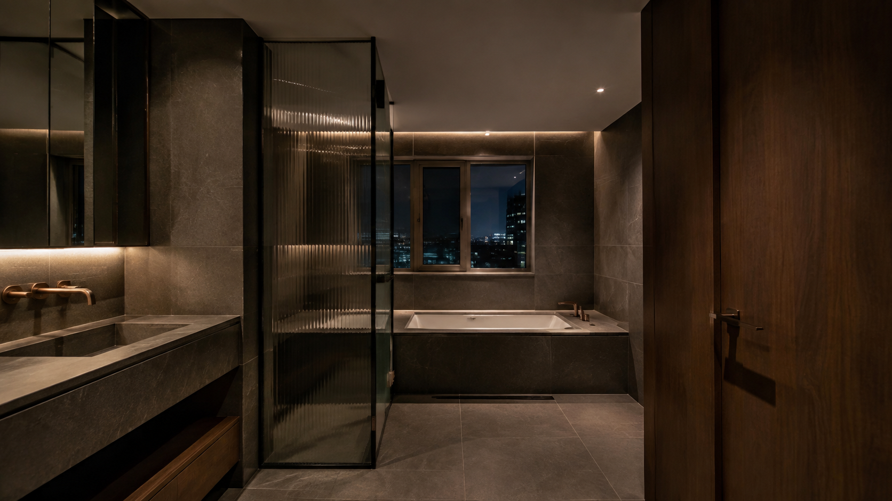
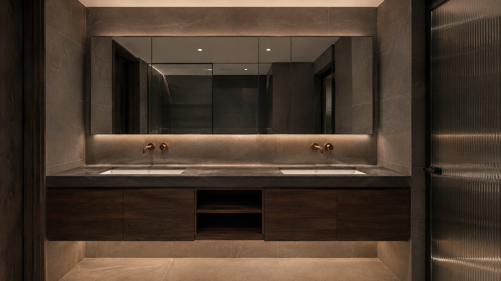

Proportion
타일 규격과 가구, 거울의 비례를 한 화면으로 봅니다.

ARCHITECTURAL TILE & BATH / 2026
01 / PHILOSOPHY
넓은 포세린 면과 짙은 목재, 낮게 흐르는 빛. 재료를 많이 쓰기보다 각 재료가 가장 아름답게 만나는 지점을 설계합니다.
QUIET LUXURY
02 / SIGNATURE SPACE


04 / FOUR PRINCIPLES
타일 규격과 가구, 거울의 비례를 한 화면으로 봅니다.
면에서 면으로 이어지는 줄눈과 재료의 방향을 계획합니다.
필요한 요소만 남겨 소재 자체가 공간의 표정이 되게 합니다.
모서리와 섀도갭, 수전 주변처럼 가까이 보이는 곳을 정돈합니다.
05 / PROJECT ARCHIVE
06 / BEGIN A PROJECT